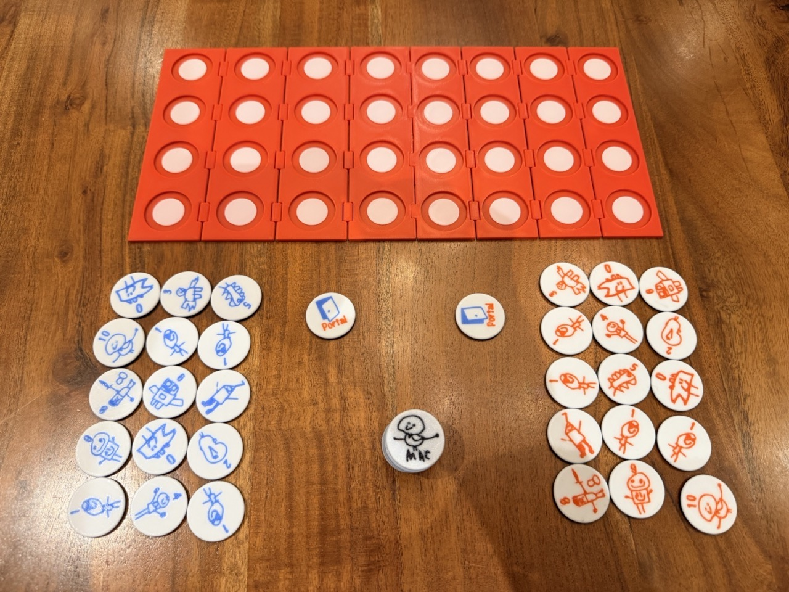

< Back to Home
Game Overview

MAC: March and Chomp is an abstract strategy game for two players. The objective is to strategically maneuver your pieces to capture all of your opponent’s pieces or force them into a position where they cannot make a legal move.
Components
- Game Board: One 4×8 grid (32 squares).
- Game Pieces: 30 numbered pieces (15 Red, 15 Blue). Numbered: 0, 0, 1, 1, 1, 1, 2, 3, 4, 5, 6, 7, 8, 9, 10.
- Portal Tiles: 2 special movement tiles.
- Power Tokens: Optional for more complex gameplay.
Standard Mode Rules
Setup
- Each player chooses a color (Red/Blue) and receives 15 pieces and one Portal Tile.
- Determine who goes first.
- Players take turns placing one of their pieces or their Portal Tile onto their 4×4 starting half of the board. All pieces and the portal must be placed.
- The player who placed the very first piece of the game will make the first move after all setup is complete.
Gameplay & Movement Restrictions
Players alternate turns. On your turn, you must move one of your pieces one square orthogonally (up, down, left, or right).
A piece may not:
- Move off the board.
- Move onto a square occupied by a friendly piece.
- Move onto a square occupied by an opposing piece of higher strength.
Capture Rules
- A piece captures an opposing piece by moving onto its square (equal or lower strength only).
- Special Hierarchy Rule: A Strength 1 piece defeats a Strength 10 piece. A Strength 10 piece cannot capture a Strength 1 piece.
Cannon (Strength 0) Rules
- Standard Move/Capture: Moves one square orthogonally. Can capture an opponent piece of Strength 0 by moving one step.
- Jump Capture: Can capture an opponent's piece of any strength by jumping over exactly one piece in a straight orthogonal line. The piece being jumped over (the "screen") is not captured.
- A Cannon cannot jump into a Portal.
Portal Rules
- A game piece can move one step into a Portal Tile.
- It immediately exits through the other Portal Tile and takes one additional, immediate orthogonal step (capturing an enemy on this final step is allowed).
- If no legal exit square is available, the piece cannot enter the first Portal.
- A Portal Tile can act as a screen piece for a Cannon's Jump Capture.
End of Game and Draw Conditions
- You lose if: All of your game pieces are captured, or you cannot make a legal move on your turn.
- Draw if: The exact same board state is repeated three times, or 20 consecutive turns pass without a capture.
Optional Power Token Mode
This mode uses Power tokens to add tactical depth. Whenever one of your pieces is captured, you draw one Power token. You may play one Power token at the start of your turn before moving.
| Power Token |
Effect |
Special Rules |
| +1 |
Increases a piece's strength by 1. |
A piece can only receive one +1 power up.
Strength 9 becomes 10 (now capturable by 1).
Strength 10 becomes 11 (still capturable by 1).
Cannon (0) keeps Jump Capture, but can now also capture a 0 or 1 with a single step. |
| Double Step |
Choose a piece to take 2 orthogonal steps. |
- |
| Push |
Move one opponent's piece 1 step orthogonally. |
You may Push an opponent’s piece into a Portal and decide where it exits. |
| Peek |
(Dark Chess Mode only). Secretly look at up to 3 covered pieces. |
Remove this token from the pile if playing Standard or Light Chess. |
Variant Modes
Dark Chess
- Shuffle all 30 game pieces face down. Place Portal Tiles face up on agreed squares.
- Randomly arrange pieces face down. On your turn, either flip over one down-facing piece OR move one up-facing piece.
- The first player to flip a piece determines which color they control.
- A down-facing piece cannot be captured, but a Cannon can use it as a screen to jump over.
Light Chess
- Shuffle and randomly place all 30 pieces and 2 Portals face down.
- Players choose their color before play begins.
- All pieces are flipped over at the same time, and the game is played normally with all pieces uncovered.